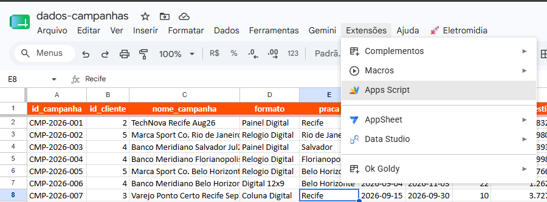
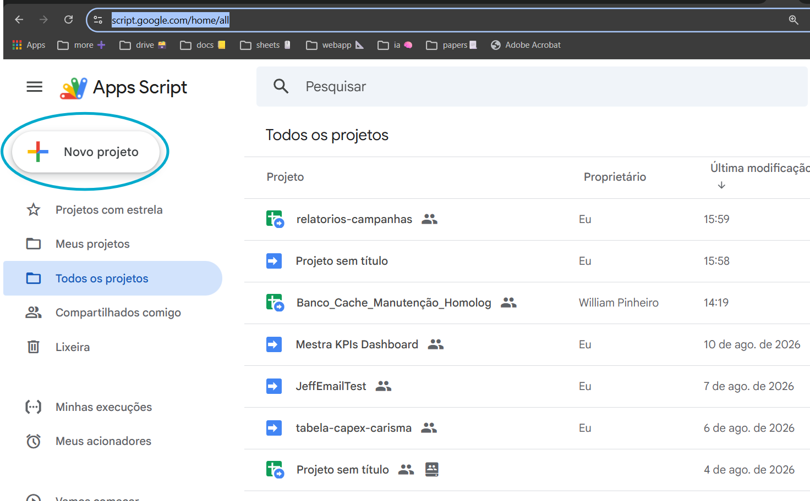
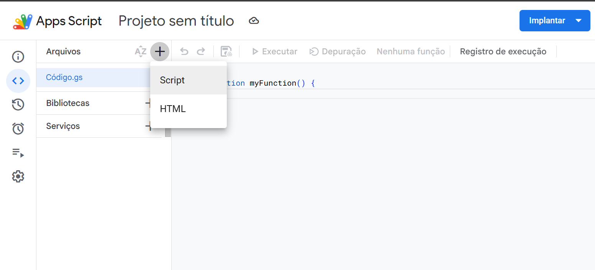
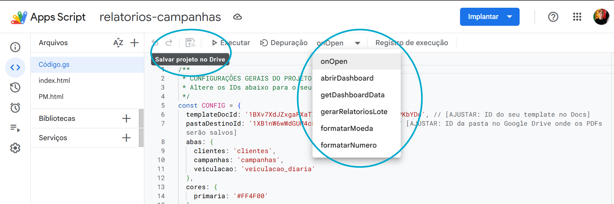

01
O jeito que trava
Copiar e colar o mesmo dado
Refazer relatório toda semana
Esperar alguém criar uma ferramenta simples
Use uma planilha como ponto de partida para criar algo útil no Google Workspace.
Não é sobre criar um sistema gigante. É sobre remover uma repetição que não deveria consumir seu tempo.
Você descreve o problema. O Gemini organiza o contexto e propõe um caminho. O Apps Script conecta Sheets, Docs, Drive e Gmail para executar.
Uma tarefa menor.Os Gems são encadeados. Cada um vive em uma conversa e tem uma responsabilidade diferente.
Anexe o arquivo e peça apenas o entendimento completo da base. O resultado vira contexto para a próxima conversa.
Abra uma nova conversa, anexe a planificação e explique a ideia. O segundo Gem pensa a solução e gera o Apps Script.
Clique em cada etapa. O processo conecta duas conversas com IA a um projeto que pode evoluir.
Anexe o xlsx ao Gem de Planificação. Ele transforma abas, colunas, fórmulas e relações em um texto que a IA consegue carregar na nova conversa do próximo passo.
Uma planilha e uma pergunta: “para que esse dado serve?”
Se a descrição representa a planilha real. Se inventou algo, pare e corrija.
Não precisa decorar a tela. Estas imagens mostram o que aparece quando você sai da planilha e começa a montar a solução.
Leia assim: as imagens 01 e 02 mostram dois jeitos de começar. Depois, as imagens 03 e 04 mostram o que acontece dentro do projeto, qualquer que seja o caminho escolhido.

Se a automação nasce nesse arquivo, clique em Extensões e escolha Apps Script. O projeto já começa conectado a ele.
Abrir imagem maior ↗
Se a solução vai juntar vários arquivos, abra o Apps Script, clique em Novo projeto e dê um nome que explique a tarefa.
Abrir imagem maior ↗
Adicione um arquivo de script para as ações e um HTML para a tela. A memória do projeto ajuda a retomar o trabalho.
Abrir imagem maior ↗
Você vê o Code.gs, a tela HTML e a memória lado a lado. A lista de funções mostra as ações que o projeto pode executar.
Abrir imagem maior ↗O melhor caminho depende de onde os seus dados estão e de quantos arquivos a solução vai usar.
Se a tarefa nasce em uma planilha ou documento, ficar perto dele costuma ser mais simples. Se a solução vai juntar várias fontes, um projeto independente pode organizar melhor as conexões.
Abra o arquivo no Google, entre em Extensões → Apps Script e crie o projeto por ali. É um bom começo quando a automação trabalha principalmente com esse arquivo.
Abra script.google.com, clique em Novo projeto e conecte as planilhas, Docs ou pastas que o código vai usar. É útil quando existem várias fontes ou uma interface própria.
Use um nome que conte o que o projeto faz e registre os arquivos envolvidos no PM.html. Seu “eu” de amanhã vai agradecer.
Antes de executar, reúna um ID para cada arquivo externo que o projeto vai usar. Você não precisa adivinhar: eles aparecem no link, entre as barras indicadas.
https://docs.google.com/spreadsheets/d/ID_DA_PLANILHA/edithttps://docs.google.com/document/d/ID_DO_DOCUMENTO/edithttps://drive.google.com/drive/folders/ID_DA_PASTACopie apenas o trecho em destaque. Não copie /edit, ?gid= ou a URL inteira.
É sobre criar um jeito seguro de aprender, testar e melhorar uma coisa de cada vez.
Descreva a repetição que atrapalha antes de pedir uma tela bonita.
Um botão que resolve uma etapa vale mais que um sistema enorme que ninguém testou.
Informe nomes de abas, arquivos, campos e o resultado esperado. Contexto reduz chute.
IA ajuda a construir. A decisão sobre dados, permissões e envio continua sendo sua.
Use uma cópia e poucos registros. Primeiro confirme o caminho, depois aumente o volume.
Guarde objetivo, IDs usados, decisões e próximos passos para a próxima conversa.
Sheets, Docs, Drive, Gmail, Forms e Calendar podem virar partes de uma solução feita para o seu processo.
Recebe contexto, organiza o problema e ajuda a escolher o próximo passo.
Lê, transforma, cria, envia, chama serviços e automatiza fluxos dentro do Workspace.
Dashboard, relatório, alerta, formulário, rotina ou web app: a possibilidade depende do problema.
onOpen() cria um menu na planilha, mas não limita o que o Apps Script pode fazer.
onOpen()Menu na planilhaMostra ações personalizadas quando a pessoa abre o arquivo.
doGet()Web appEntrega uma interface própria acessível por uma URL.
onEdit(e)Reação a mudançasExecuta uma ação quando uma célula é editada.
GatilhosRotina automáticaRoda por horário, envio de formulário ou outros eventos.
O código gerado fica mais fácil de entender e retomar quando cada parte tem um lugar claro.
Lógica, dados, integrações e qualquer forma de iniciar uma ação.
Dashboard, botões, tabelas e a experiência que aparece para quem usa.
Objetivo, estrutura, decisões e próximos passos para a próxima conversa com a IA.
Este é um exemplo de gatilho. O mesmo projeto também pode responder a edições, horários, formulários, URLs e outros eventos.
Permissão não é detalhe. É parte do produto.
O arquivo principal de um projeto vinculado já está conectado. Mas cada planilha, documento ou pasta adicional que o código abrir, ler ou usar como destino precisa do seu próprio ID. O projeto demonstrado usa um `templateDocId` e um `pastaDestinoId`.
Se você copiar o projeto, substitua pelos IDs do seu ambiente. Não copie a URL inteira nem use o ID de um exemplo como se fosse o seu. Também confira a conta correta, o gatilho escolhido e as permissões.
O artefato explica o caminho. Os links abaixo levam para o trabalho real.
Dê contexto. Faça uma versão pequena. Revise antes de autorizar. Guarde a memória do projeto. Depois, repita o processo em outra tarefa.